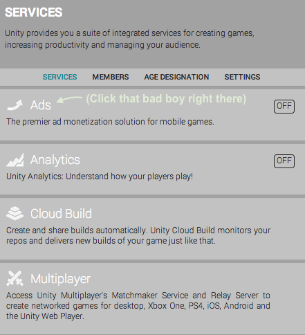
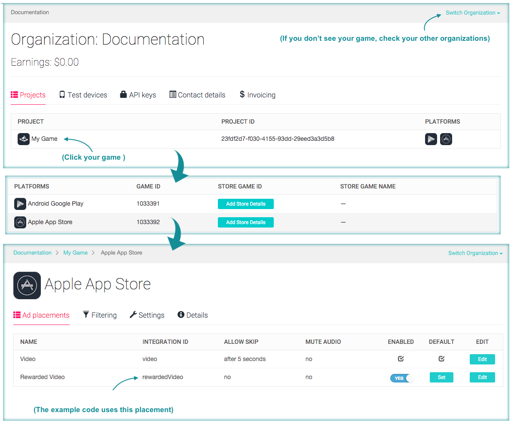

Your UDN Account is used to manage Unity Ads profiles.
Other members of your Organization have access to your Ads account as well.
For versions of Unity older than 5.2, click here.
To open the Ads Services panel, click "Ads", and enable the SDK in your project.

using UnityEngine;
using UnityEngine.Advertisements;
public class UnityAdsExample : MonoBehaviour
{
public void ShowRewardedAd()
{
if (Advertisement.IsReady("rewardedVideo"))
{
var options = new ShowOptions { resultCallback = HandleShowResult };
Advertisement.Show("rewardedVideo", options); // Show an ad with the "rewardedVideo" placement
}
}
private void HandleShowResult(ShowResult result) // Called when the video ad ends
{
if (result != ShowResult.Skipped)
{
// Player has watched an ad - Provide the reward
// Give coins, lives, etc...
}
}
}
Your game should now display test ads when you call ShowRewardedAd() - Don't forget to disable Test Mode when your game goes live.
Additional examples and troubleshooting can be found here.
For additional questions, check out the forum or contact Unity Ads Support.

From here, you can modify placements and other game-specific settings.
It's important to inventivize users to watch ads. Incentivizing ads improves user engagement, and substantially increases revenue.
A good implementations genernally include one or more of the following:
Check out our designer guide for examples and more information on incentivizing your video ads.
Additional information on placements can be found in our Knowledge base.